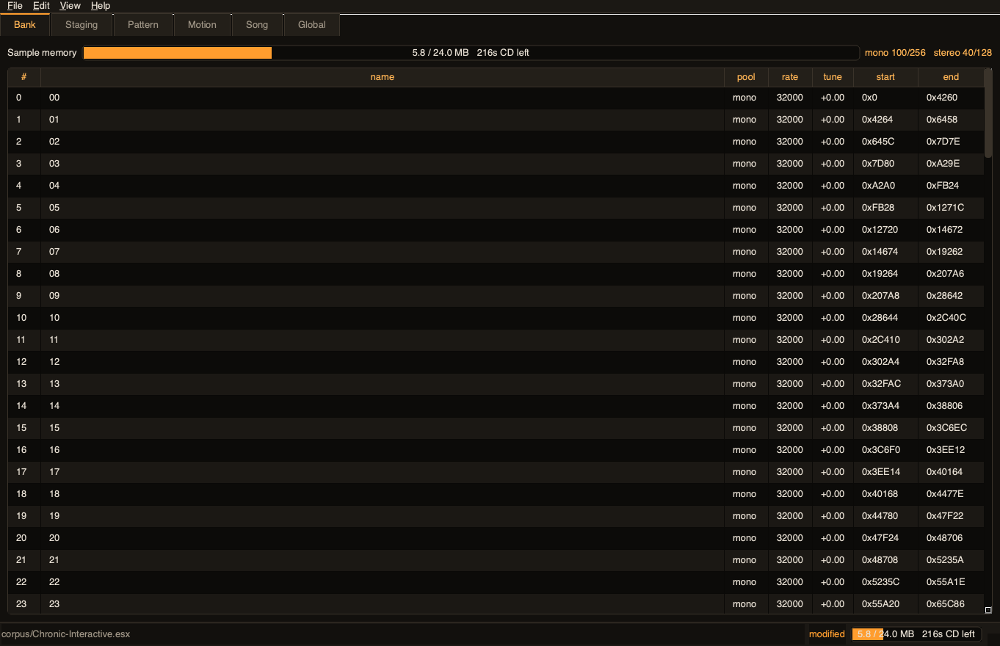
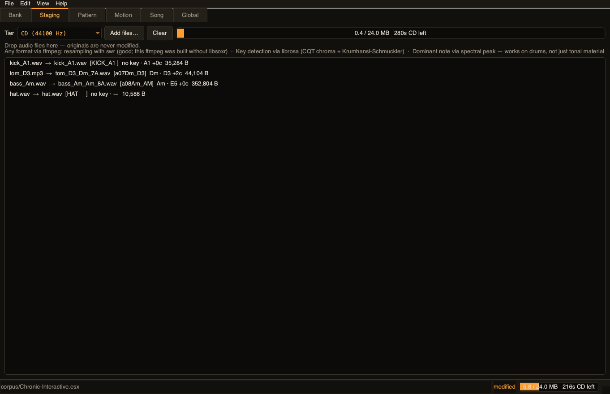
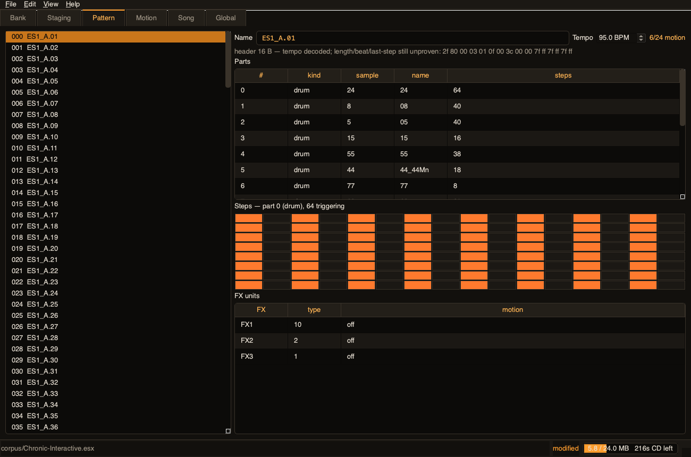
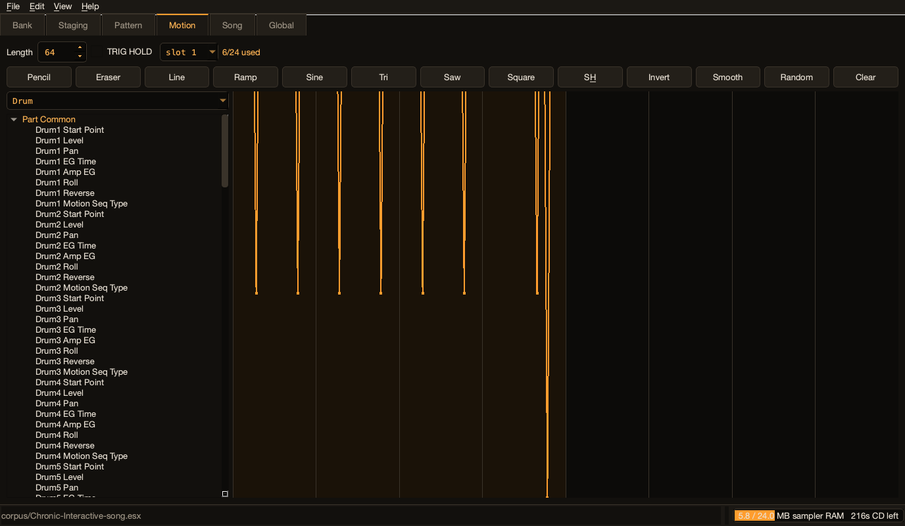
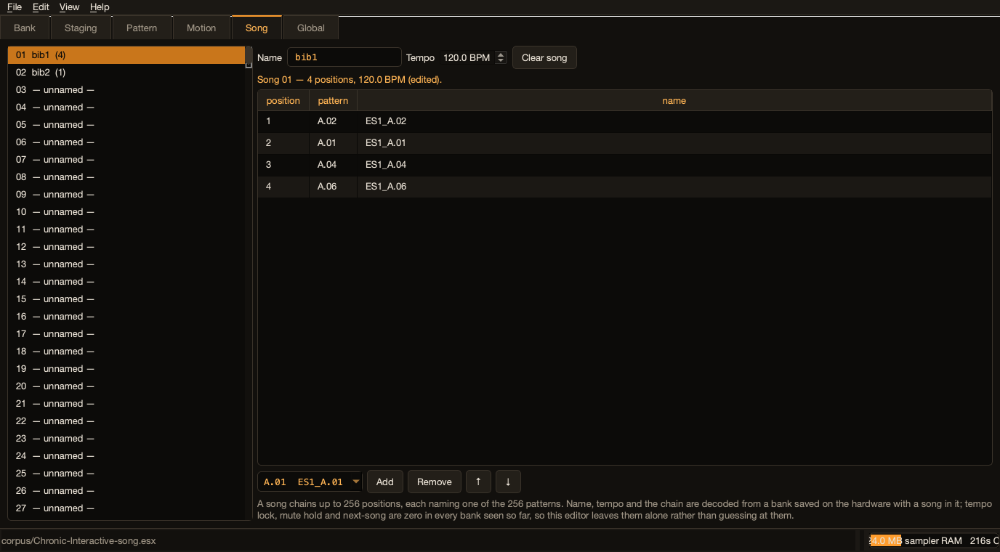
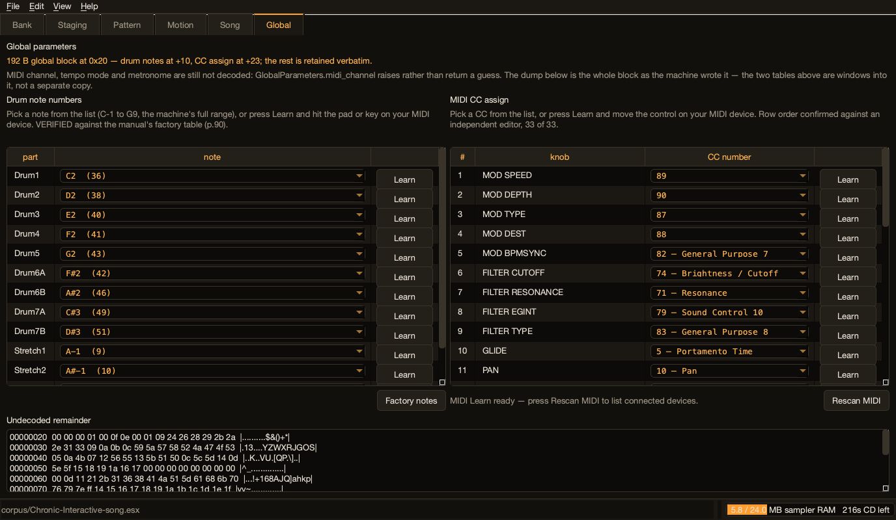
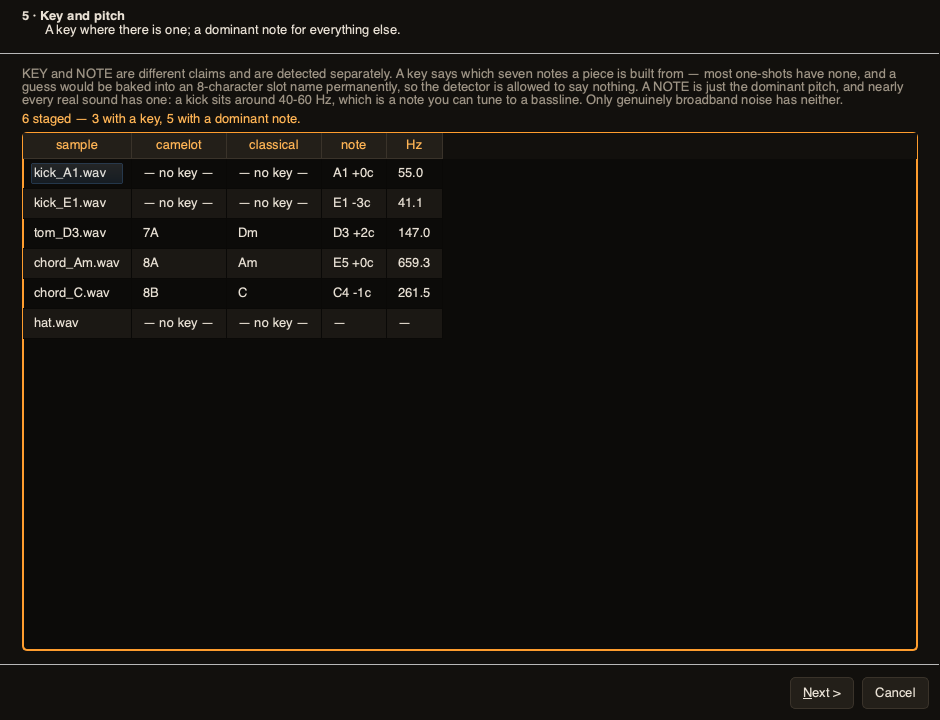
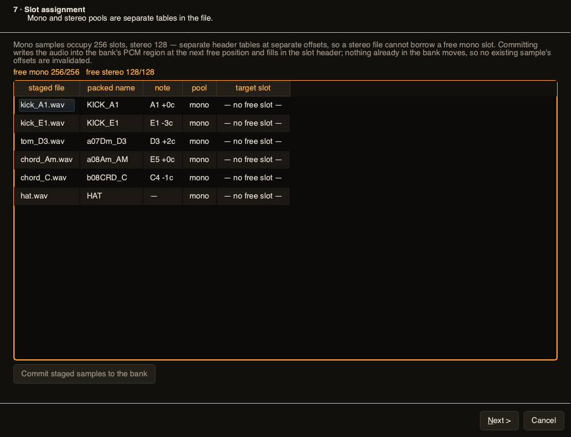
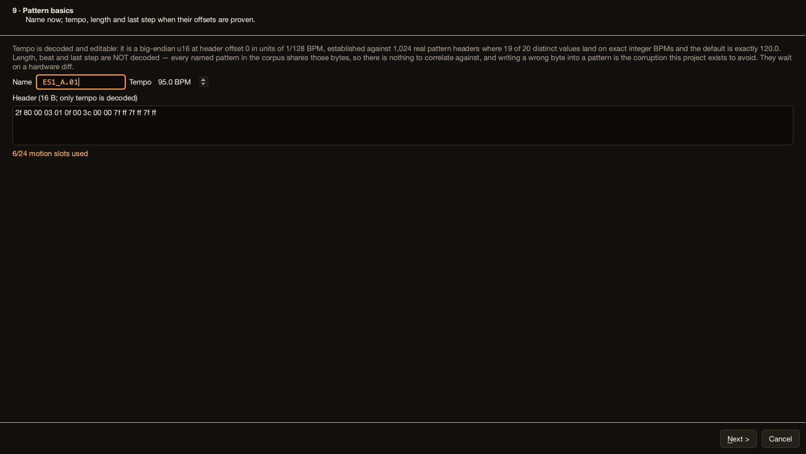
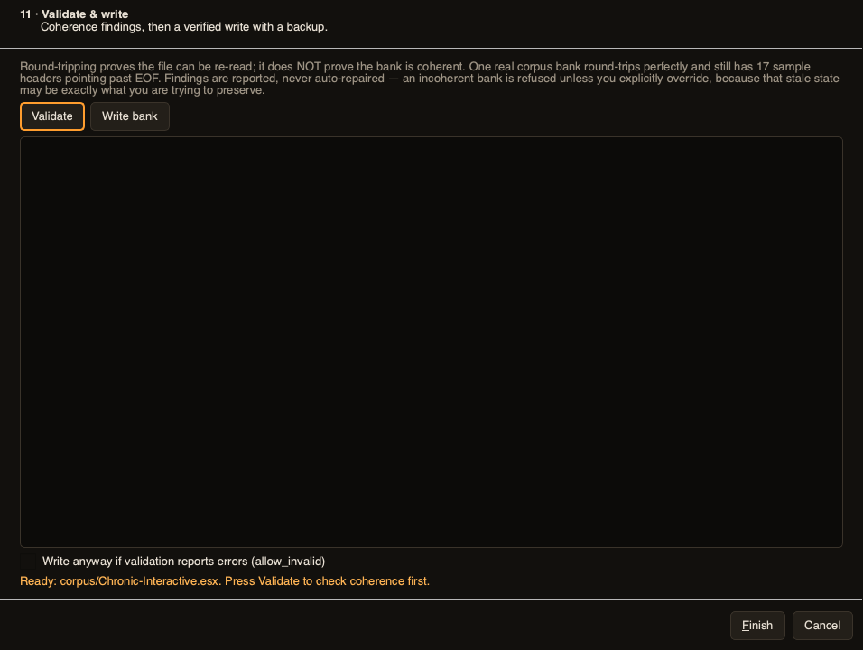

The editor is feature-complete against the TDD apart from what genuinely needs the hardware. This is the manual script: how to launch it, what to click, and what "correct" looks like on each screen.
cd /Users/aaandy/_andy_ai_projects_2026/esx_editor PYTHONPATH="$PWD" ~/.venvs/esx/bin/python -m ui.app
A 1100×720 window opens with six tabs and an empty status bar reading no bank.
Then File → Open… and pick corpus/card_backup_2026-08-22/e4.esx.
SITE=$(~/.venvs/esx/bin/python -c "import site; print(site.getsitepackages()[0])") QT_QPA_PLATFORM=offscreen PYTHONPATH="$SITE:$PWD" python3 -m pytest tests/ -q # expect: 375 passed, 1 skipped
| Tab | What it does | Correct on Chronic-Interactive.esx |
|---|---|---|
| Bank | Every occupied slot of the 384, with rate, musical tune, PCM range, the usage meter and pool counts. | 140 rows, mono 100/256 stereo 40/128, meter ≈ 5.8 / 24.0 MB. Stereo rows show a real rate (32000) — that offset was settled from this bank's 40 stereo slots. Tune reads +0.00: imported material carries pure rate compensation. |
| Staging | Drop audio; tier selector; live scoreboard. Each line shows the packed 8-char name, the key, the dominant note and the byte cost. | The header line names which backends are live. With ffmpeg present you can drop mp3/flac/aiff/m4a/ogg, not just WAV. |
| Pattern | 256 patterns, name, editable tempo, parts with their sample number and name, a live 128-step grid, FX units, motion budget, header hex. | Pattern 000 ES1_A.01 at 95.0 BPM; part 0 plays sample 24 (named "24") on 64 steps. Click a part row to load its steps; click a step to toggle it. |
| Motion | The WF5 drawable canvas. Follows the Pattern tab's selection. | Selecting pattern 5 re-binds this canvas to pattern 5's 24 slots. |
| Song | Edit the 64 songs: name, tempo, and the ordered chain of patterns each one plays. | 64 songs in the list; selecting one shows its chain as A.01–D.64 positions. Add / Remove / ↑ / ↓ edit the chain; the title bar shows • modified. An untouched song reads "1 position, 120.0 BPM (untouched default)". |
| Global | The 192-byte global block as an offset/hex/ASCII dump. | 12 dump lines from 00000020. No MIDI-channel control — that field is undecoded. |
| Field | Evidence |
|---|---|
| Stereo sample header | 40 populated stereo slots. 40/40 on every predicted property; 0/40 for the layout the TDD had inferred from blank slots. Corrects TDD §2.3. |
| Pattern tempo | 1,024 headers: 19 of 20 distinct values are exact integer BPMs, and the default is exactly 120.0. |
| Part sample number | 728/728 point at an occupied slot; and in a bank that names samples after their own index, 672/672 match exactly. |
| Step triggers | Halves byte-identical on 468/468 parts; LSB-first puts 1.85× the uniform share of hits on the quarter-note grid, MSB-first inverts it. |
| PCM endianness | Big-endian wins 20/20 on lag-1 autocorrelation (+0.98 vs +0.19). A wrong byte order still round-trips — it just plays static. |
| Sample tune | 134 of 140 occupied slots decode to a musical tune of exactly 0.00, i.e. pure rate compensation. |
Pattern length/beat/last-step, the songs, and the MIDI channel are not unfinished — they are undeterminable from the available data, and that was established rather than assumed:
Each needs one hardware diff: change one setting, Save All, compare. The error messages name the exact bytes to watch.
corpus/Chronic-Interactive.esx.
Expect: title bar shows the name, all six tabs populate, meter ≈ 5.8 / 24.0 MB.stereo.
Expect: a real rate (32000), not "—". Tune +0.00. This is the layout that corrects the TDD.• and the status bar says modified..mp3 or .flac onto the Staging tab.
Expect: it is accepted and converted (this needs ffmpeg; the header line tells you whether it is present). The ORIGINAL file must be untouched — check its modification time.no key but a real note like A1 +0c. The pad shows both. A noise-burst hi-hat shows neither — that is correct, not a failure.fake.wav and drop it.
Expect: a "Could not add" warning — not a crash. Try a half-written .wav too; both were real bugs..txt.
Expect: a dialog listing what this machine can read.e4.esx expect 17 errors, all offset_past_eof — that bank has stale headers and is a deliberate fixture.e4.esx, write with the override unchecked, then checked.
Expect: refusal with no file created, then a successful write with a .bak on the second write.cmp /path/to/saved.esx corpus/Chronic-Interactive.esx && echo IDENTICAL
Ctrl+1…Ctrl+6 switch tabs; Space toggles a focused step.
Expect: visible amber focus rings, every control reachable (WCAG 2.1 AA target).| # | Screen | What it decides | Honesty note |
|---|---|---|---|
| 1 | Start | New from the blank template, or open an .esx | "New" loads a bank a real ESX-1 wrote — never synthesised from zeros. |
| 2 | Card check | Back up the card before anything is written | Names the exact .bak path the write will produce. |
| 3 | Add samples | Drop files; scoreboard fills | Renders the Staging tab's own model. |
| 4 | Quality budget | Staged cost vs 25,165,824 B | Proposes trim → fold → rate drop, in that order. Applies nothing. |
| 5 | Key and pitch | Confirm keys; see the dominant note | Key and note are separate claims. Percussion gets a note but no key; broadband noise gets neither. |
| 6 | Naming | Slot-name policy, live 8-char preview | Always exactly 8 characters; the Camelot prefix costs 3 of them. |
| 7 | Slot assignment | Mono vs stereo pools; commits | Writes the audio into the bank all-or-nothing. Nothing already in the bank moves, so no existing offset is invalidated. |
| 8 | Part setup | Pattern 000's 16 parts | Each part's sample number, that sample's name, and its trigger count. Audio-in and accent show "—": they reference no sample. |
| 9 | Pattern basics | Pattern name and tempo | Tempo is decoded and editable. Length/beat/last-step are not, and the header hex is shown instead. |
| 10 | Motion | Slot budget | Points at the Motion tab; does not duplicate the canvas. |
| 11 | Validate & write | Findings, then a verified write | Findings are reported, never auto-repaired. Incoherent = refused unless overridden. |
Rendered offscreen from e4.esx with three staged WAVs. Files live in deploy/wf6_screens/.










No file this app has written has been loaded by a real ESX-1 yet. The round-trip gate is green on four
real banks and writes are defensive, but until research/HARDWARE_CHECKLIST.md is worked through,
keep a card backup. One sitting closes most of it:
#, which the naming convention assumes.e4.esx's 16 bad headers, so should we repair or refuse?A seventh, cheap one is worth adding: set FX1 to each of the 16 effect types in turn and save. The manual names the 16 types but gives no index mapping, and its two orderings disagree — so the FX table shows "type 10 of 16" rather than a name. One pass settles it.
bass_loop packs as ASS_LOOPpack_slot_name takes the last 8 characters. TDD §5.3 says that is deliberate —
"trailing characters distinguish numbered variants (kick01 / kick02)" — so it was not changed. But
snare_hat becomes NARE_HAT in real use. Keep the tail rule, truncate from the front,
or add a guard?
FxRenderer port is frozen
and waiting.set_stereo_ranges exists,
but commit_sample refuses stereo until hardware accepts one we wrote._annotated source copies (CLAUDE.md §15). That rule triggers on a push to main,
which has not happened. The source already carries heavy "why" commentary; duplicating 35 files now would
drift immediately. Say the word and they get generated at merge time.